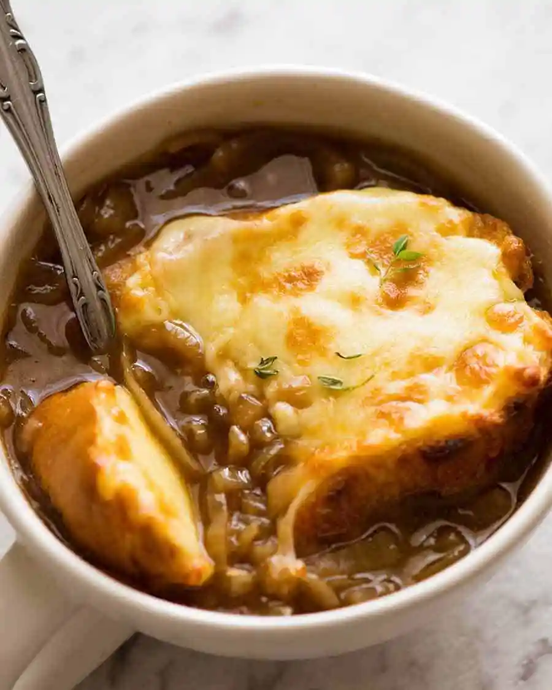

French Onion Soup

Description
Our French onion soup is deliciously rich and easy to make at home. This savoury soup is perfect for using up a garden glut and great for dinner parties.
Ingredients
- 6 large red or yellow onions
- 4 tablespoons extra virgin olive oil
- 2 tablespoons butter
- 1 teaspoon sugar
- 2 cloves garlic, minced
- 8 cups beef stock, chicken stock, or a combination of the two
- 1/2 cup dry vermouth or dry white wine
- 2 bay leaves
- 1 tablespoon fresh thyme leaves, a few sprigs of fresh thyme, OR 1/2 teaspoon dried thyme
- 8 slices (1 inch thick) French bread or baguette
- 1 1/2 cups grated Gruyere cheese
Steps
- Peel and slice the onions
- Begin caramelizing the onions with olive oil and butter
- Sprinkle with the sugar, finish caramelizing, and add garlic
- Deglaze the pot with vermouth or wine
- Add the stock, bay leaves, and thyme
- Season and add the brandy
- Toast the French bread slices
- Serve!